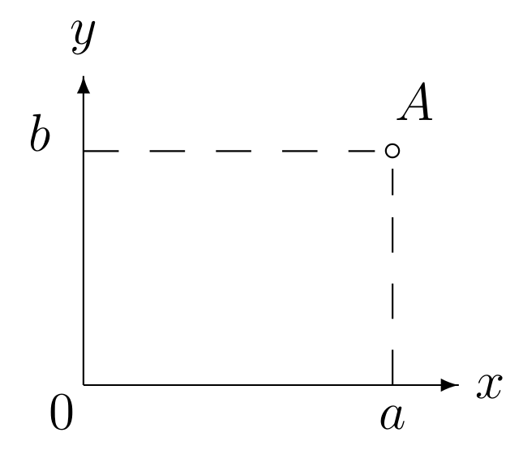
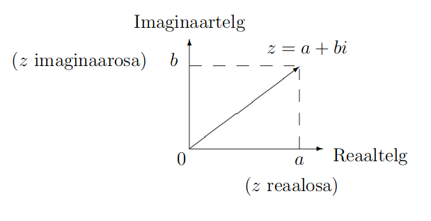
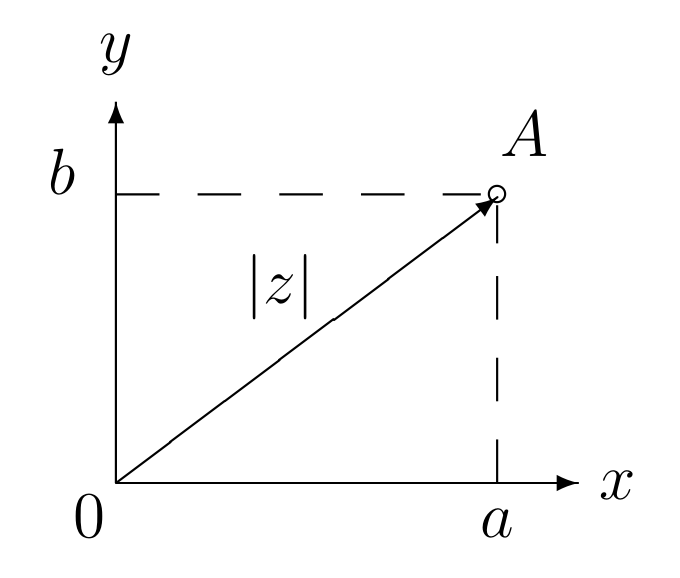
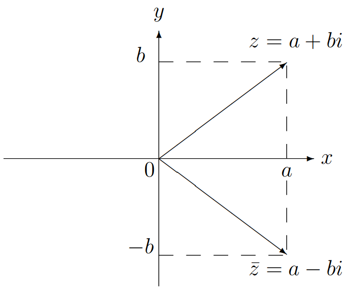
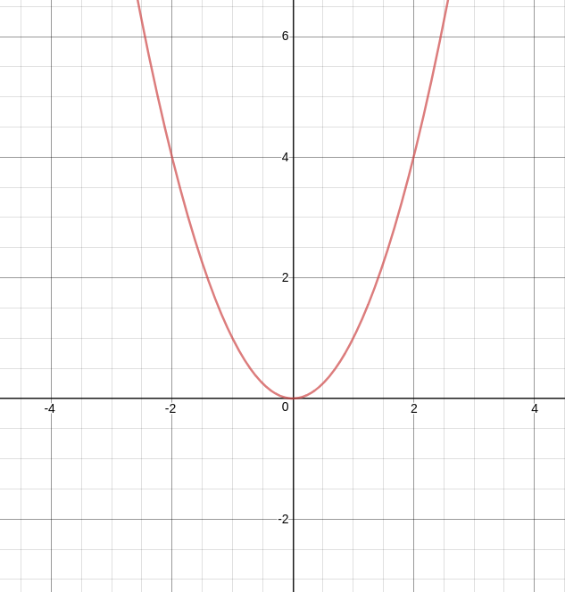
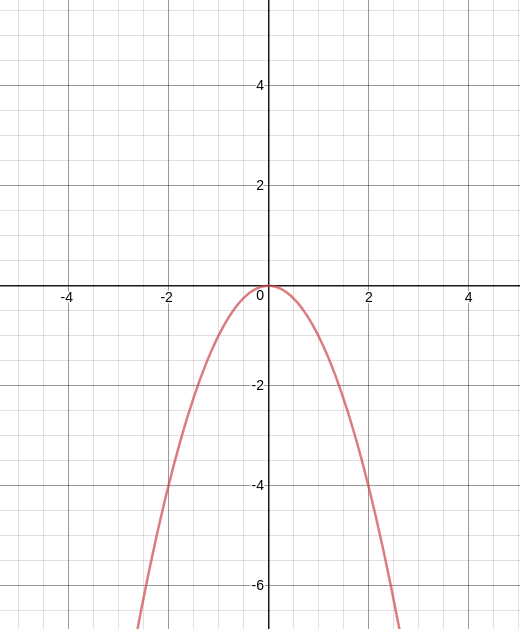

Õpilase konspekt
õppejõud Annemai Raidjõe 2019 materjal
lähtekood avalik: github
Laiendades reaalarvude hulka `R` arvuga, mille ruut on võrdne -1, saame kompleksarvude hulga. Kompleksarvude hulka tähistatakse tähega C.
Definitsioon 1.1.1. Arvu, mille ruut on -1 nimetatakse imaginaarühikuks ja tähistatakse sümboliga `i`
`i = sqrt(-1)`imaginaarühiku abil saab esitada juuri negatiivsetest arvudest. Näiteks
`sqrt(-36)``=sqrt((-1)*36)``=sqrt(-1)*sqrt(36)``=6*sqrt(-1)=6i`Üldiselt c > 0 korral
`sqrt(-c)``=sqrt((-1)*c)=``sqrt(-1)*sqrt(c)=``sqrt(c)*i`Definitsioon 1.1.2. Arve kujul `z=a+bi`, kus `a` ja `b` on reaalarvud ning `i` imaginaarühik, nimetatakse kompleksarvudeks.
Arvu `a` nimetatakse kompleksarvu `z=a+bi` reaalosaks ja arvu `bi` selle imaginaarosaks. Reaalosa tähistatakse `a=Re(z)` ja imaginaarosa tähistatakse `bi=Im(z)`
Kompleksarv `z=a+bi` sõltub kahest reaalarvulisest parameetrist `a` ja `b`, kus `a` ja `b` võivad omandada mistahes reaalarvulisi väärtusi. Seetõttu võib kompleksarvu kujutada ka järjestatud paarina `(a;b)`, millele vastab komplekstasandil punkt `A=(a;b)`
Kompleksarvu võib vaadelda ka nullpunkti rakendatud vektorina.
xy-tasandit vaadeldakse kõigi kompleksarvude hulgana. Sellist tasandit nimetatakse komplekstasandiks. Kompleksarvu reaalosa kujutatakse x-teljel ja imaginaarosa kujutatakse y-teljel. Seepärast nimetatakse x-telge reaalteljeks ja y-telge imaginaarteljeks.
Kompleksarvudel on mitmeid erinevaid esitusviise ehk kujusid. Kõige levinum on kompleksarvu algebraline kuju.
Definitsioon 1.3.1. Kompleksarvu `z` esitusviisi `z=a+bi` nimetatakse kompleksarvu `z` algebraliseks ehk Descartes'i kujuks.
Definitsioon 1.3.2. Kompleksarvu `z=a+bi` mooduliks nimetatakse reaalarvu |z|, mis leitakse seosega:
`|z|=sqrt(a^2+b^2)`Moodul `|z|>=0` on reaalarv ja kujutab endast komplekstasandil asuva punkti `A=(a;b)` kaugust nullpunktist.
Jooniselt on näha, et kompleksarvu moodul leitakse Pythagorase teoreemi abil. Näiteks kompleksarvu `z=3+4i` moodul on `|z|=|3+4i|=sqrt(3^2+4^2)=5`.
Definitsioon 1.3.3. Kompleksarvu `z=a+bi` kaaskompleksarvuks ehk kaaskompleksiks nimetatakse kompleksarvu
`bar z = a - bi`Kaaskompleksarv `bar z` asub arvuga `z` nullpunktist võrdsel kaugusel ning `z` ja `bar z` on sümmeetrilised reaaltelje suhtes.
Definitsioon 8.1.1. Kui hulga `X sub R` igale elemendile `x` on vastavusse seatud element `y` hulgast `X`, siis öeldakse, et hulgal `X` on määratud (ühene) funktsioon `f` ja seda vastavust tähistatakse `y=f(x)` (`x in X`). Kõikide elementide hulka `x in X`, mille puhul funktsioon `f(x)` on määratud nimetatakse funktsiooni `f` määramispiirkonnaks. Funktsiooni `f` kõikide väärtuste hulka
`Y = {y:\ y= f(x), x in X}`nimetatakse funktsiooni `f` muutumispiirkonnaks ehk väärtuste hulgaks.
Elementi x nimetatakse funktsiooni `f` argumendiks ehk sõltumatuks muutujaks ja elementi y nimetatakse sõltuvaks muutujaks.
Definitsioon 8.1.2. Funktsiooni `f` nimetatakse ülalt tõkestatuks funktsiooniks hulgal `X_1 sub X`, kui leidub selline reaalarv `m`, et iga `x in X_1` korral kehtib võrratus `m<=f(x)`. Funktsiooni `f`, mis on nii alt kui ka ülalt tõkestatud hulgal `X_1`, nimetatakse tõkestatud funktsiooniks hulgal `X_1`.
Funktsioon `y=f(x)` (`x in X`) on määratud, kui on antud tema määramispiirkond `X` ja on teada vastavust määrav eeskiri `f`.
Näited:
alt tõkestatud: `y=x^2`
ülalt tõkestatud: `y=-x^2`
Funktsiooni esitatakse ilmutatud kujul võrdusena `y=f(x)`, kus vasakul pool võrdusmärki on `y` ja paremal mingisugune analüütiline avaldis muutuja `x` suhtes. Vajadusel lisatakse ka määramispiirkonna kirjeldus. Näiteks avaldis
`y=ln(x^2-9) + 1`, `x in [-3;3]`kirjeldab ilmutatud kujul antud funktsiooni, mille määramispiirkonnaks on lõik `[-3; 3]` ja iga `x` korral sellelt lõigult arvutatakse argumendile `x` vastavad funktsiooni väärtused `f(x)` vastavalt funktsioonile `y=ln(x^2-9)+1`.
Definitsioon 8.2.1. Öeldakse, et funktsioon `y=f(x)` (`x in X`) on esitatud võrrandi `F(x, y)=0` abil ilmutamata kujul, kui iga `x in X` korral `F(x, f(x))=0`.
Ilmutamata kujul antud funktsiooni ilmutamiseks tuleb lahendada võrrand muutuja `y` suhtes.
Näiteks funktsioon
`x^2+y^2-16=0`esitab ilmutatud kujul funktsioone
`y=sqrt(16-x^2)`Iga ilmutamata kujul antud funktsiooni ei ole võimalik esitada ilmutatud kujul, st kujul `y=f(x)`. Näiteks võrrandit `y^2-x+sin(y) = 0` ei õnnestu lahendada muutuja `y` suhtes.
Iga ilmutatud funktsioon `y=f(x)` on esitatav ilmutamata kujul `y-f(x)=0`. Näiteks ilmutatud funktsioon `y=cos x` ilmutamata kuju on `y-cos x = 0`.
Funktsiooni `f` parameetriline kuju
`{(x=x(t)),(y=y(t)):}\ t in T sub R`Muutujat `t` nimetatakse parameetriks.
Iga funktsiooni `y=sqrt(x+2)` esitus parameetrilisel kujul on
`{(t=x+2),(y=sqrt(t)):}`Funktsioon esitatakse graafikuna tasandil ristkoordinaadistikus.
Definitsioon 8.2.2. Funktsiooni `f` graafikuks nimetatakse xy-tasandi punktide hulka
`Gamma(f)={(x,y):\ y=f(x),\ x in X}`.Paari `(x,y) in R` nimetatakse graafiku punktiks.
Funktsiooni argumendi võimalikud väärtused esitatakse tabeli ühes reas (veerus) ja neile vastavad funktsiooni väärtused tabeli teises reas (veerus)
| `x` | `x_0` | `x_1` | ... | `x_n` |
| `y` | `f(x_0)` | `f(x_1)` | ... | `f(x_n)` |
Näited:
ilmutatud kuju: `y=x^2`
ilmutamata kuju: `y-x^2=0`
parameetriline kuju: `{(x=t^2),(y=2t):}`
Definitsioon 8.3.1. Funktsiooni `y=f(x)` nimetatakse paarisfunktsiooniks määramispiirkonnas `X`, kui
`f(-x)=f(x)`Funktsiooni `y=f(x)` nimetatakse paarituks funktsiooniks määramispiirkonnas `X`, kui
`f(-x)=-f(x)` `forall x in X`Paarisfunktsiooni graafik on sümmeetriline y-telje suhtes ja paaritu funktsiooni graafik on sümmeetriline nullpunkti suhtes.
Näiteks paarisfunktsioonid on `y=x^2`, `y=|x|` ja `y=cosx`. Paaritud funktsioonid on näiteks `y=sin x`, `y=tan x` ning `y=x^3`.
Definitsioon 8.3.2. Funktsiooni `f` nimetatakse perioodiliseks, kui leidub selline arv `omega ne 0`, et iga `x in X` korral ka `x pm omega in X` ja `f(x+ omega)=f(x)`. Vähimat positiivset arvu `omega`, mille korral `f(x + omega) = f(x)` iga `x in X` korral, nimetatakse funktsiooni `f(x)` perioodiks.
Näiteks trigonomeetrilised funktsioonid on perioodilised.
Definitsioon. Funktsiooni `f` määramispiirkonnaga X nimetatakse kasvavaks (kahanevaks) hulgas `S sub X`, kui iga `x_1, x_2 in S` korral alati sellest, et `x_1 < x_2` järeldub, et `f(x_1) < f(x_2)` (kahaneva puhul `f(x_1) > f(x_2)`)
Funktsiooni `f`, mis rahuldab tingimust
`x_1 < x_2\ \ =>\ \ f(x_1)<=f(x_2)\ \ forall x_1, x_2 in S`nimetakse monotoonselt kasvavaks hulgas `S`.
Funktsiooni `f`, mis aga rahuldab tingimust
`x_1 < x_2\ \=>\ \ f(x_1)>=f(x_2)\ \ forall x_1, x_2 in S`nimetakse monotoonselt kahanevaks hulgas `S`.
Funktsiooni nimetatakse monotoonseks hulgas `S`, kui ta on kas monotoonselt kasvava või monotoonselt kahanev selles hulgas.
Me ütleme, et funktsioon `f` on üksühene, kui tema määramispiirkonnas ei leidu kaht erinevat punkti `x_1` ja `x_2`, mille korral `f(x_1) = f(x_2)`. Seega funktsioon `f` on üksühene, kui suvaliste määramispiirkonna punktide `x_1` ja `x_2` korral sellest, et `x_1 ne x_2`, järeldub `f(x_1) ne f(x_2).
Näiteks funktsioon `y=sin x`, `x in [-pi/2, pi/2]` on üksühene, kuid see funktsioon ei ole üksühene kogu reaalarvude hulga.
Definitsioon 8.4.1. Kui iga arvu `y in Y sub R` korral leidub ainult pks arv `x in X sub R`, mille korral `y=f(x)`, siis öeldakse, et funktsioonil `f` on olemas pöördfunktsioon
`x=f^-1(y)`muutumispiirkonnaga `X`. Kui funktsiooni muutumispiirkond on tõkestatud hulk, siis nimetatakse funktsiooni tõkestatud funktsiooniks.
Seega kui funktsioonil `f` on olemas pöördfunktsioon `f^-1(y)`, siis funktsioon `f` korraldab üksühese vastavuse piirkondade `X` ja `Y` vahel. Funktsiooni muutumispiirkonna leidmiseks tuleb leida funktsiooni pöördfunktsioon ja seejärel selle määramispiirkond.
Funktsiooni `y=f(x)` pöördfunktsiooni `x=f^-1(y)` leidmiseks tuleb
Olgu `f` ja `g` funktsioonid, mis on määratud ühel ja samal hulgal `X`. Defineerime funktsioonide summa `f+g`, vahe `f-g`, korrutise `f*g` ja jagatise `f/g` järgmiste seostega
Näide 8.5.1. Leiame funktsioonide `f(x)=2x` ja `g(x)=x-1` summa, vahe, korrutise ja jagatise.
Olgu antud kaks funktsiooni: `y=f(x)` määramispiirkonnaga `X_f` ja `z=g(y)` määramispiirkonnaga `Y_g`. Asendades suuruse `y` funktsiooni `g` avaldises `f(x)`-ga saame uue funktsiooni mille argumendiks on `x` ja sõltuvaks muutujaks `z`, kusjuures `x` ja `z` vaheline seos on antud kujul `z=g[f(x)]`. Tegemist on funktsioonide `f` ja `g` liitfunktsiooniga. Liitfunktsiooni tähistatakse `g @ f`. Seega saame kirjutada `z=(g @ f)(x)=g[f(x)]`.
Näiteks annavad funktsioonid
`f(x)=sqrt(x+3)`ja
`g(y)=ln y`liitfunktsiooni
`(g @ f)(x) = ln sqrt (x+3)`.Olgu antud funktsioon `f`, mille määramispiirkonnaks on piirkond `X`. Olgu `a` selle piirkonna kuhjumispunkt, st selle punkti `a` igas ümbruses `(a - delta_0, a+delta_0), delta_0 > 0` leidub punktist `a` erinevaid hulga `X` punkte `(x in X, x ne a)`.
Definitsioon 9.1.1. Arvu `A` nimetatakse funktsiooni `f` piirväärtuseks protsessis `x->a`, kui suvalise `epsilon > 0` korral leidub `delta = delta(epsilon)`, et iga `x in X` korral, mis rahuldab tingimust
`0 < |x-a| < sigma,`kehtiv võrratus
`|f(x)-A| < epsilon`.Tähistatakse
`lim_(x->a) f(x)=A`.Vaatleme funktsiooni `f`, mille määramispiirkonnaks on `X`. Olgu `a` selle piirkonna selline kuhjumispunkt, mille mingi parempoolne ümbrus sisaldub hulgas X, st leidub `delta_0 > 0`, nii et `(a, a+ delta_0) sub X`.
Definitsioon 9.1.2. Arvu `A` nimetatakse funktsiooni `f` piirväärtuseks protsessis `x->a+` `(x-> a-)`, kui suvalise `epsilon > 0` korral leidub `delta = delta(epsilon) > 0`, et iga `x in X` korral, mis rahuldab tingimust
`0 < x -a < delta``\ \ \ (0 < a - x < delta)`,kehtib võrratus
`|f(x) - A| < epsilon`.Tähistatakse
`lim_(x->a+) f(x) = A``\ \ \ (lim_(x->a-) f(x)=A)`.Protsessi `x->a+` `(x->a-)` nimetatakse parempoolseks (vasakpoolseks) piirväärtuseks.
Omadus 9.1.1. Arv `A` on funktsiooni `f` piirväärtus protsessis `x -> a` parajasti siis, kui `A` on selle funktsiooni `f` piirväärtus nii protsessis `x->a+` kui ka `x-> a-`.
Definitsioon 9.1.3. Arvu `A` nimetatakse funktsiooni `f` piirväärtuseks protsessis `x->infty` `("või " x->-infty)` kui iga positiivse arvu `epsilon > 0` jaoks leidub selline positiivne arv `N=N(epsilon)>0`, et iga
`x>N``\ \ \ (x < -N)``\ \ \ (x in X)`korral kehtib võrratus
`|f(x)-N| < epsilon`.Sel juhul kirjutatakse
`lim_(x->infty) f(x) = A` `\ \ \ (lim_(x->-infty) f(x) = A)`Definitsioon 9.2.1. Me ütleme, et funktsioon `f` on tõkestatud protsessis `x->a`, kui leiduvad arvud `M>0` ja `delta > 0` nii, et
`|f(x)|<= M` `\ \ \ forall x in (a - delta, a+ delta)\\{a}`.Definitsioon 9.2.2. Me ütleme, et funktsioon `f` on tõkestatud protsessis `x->a+`, kui leiduvad arvud `M>0` ja `delta > 0` nii, et
`|f(x)|<= M` `\ \ \ forall x in (a, a+ delta)`.Definitsioon 9.2.3. Me ütleme, et funktsioon `f` on tõkestatud protsessis `x->a-`, kui leiduvad arvud `M>0` ja `delta > 0` nii, et
`|f(x)|<= M` `\ \ \ forall x in (a - delta, a)`.Definitsioon 9.2.4. Me ütleme, et funktsioon `f` on tõkestatud protsessis `x->infty`, kui leiduvad arvud `M>0` ja `N > 0` nii, et
`|f(x)|<= M` `\ \ \ forall x > N`.Definitsioon 9.2.5. Me ütleme, et funktsioon `f` on tõkestatud protsessis `x->-infty`, kui leiduvad arvud `M>0` ja `N > 0` nii, et
`|f(x)|<= M` `\ \ \ forall x< -N`.Omadus 9.2.1. Kui funktsioon `f` on antud protsessis lõplik piirväärtus, siis on ta selles protsessis tõkestatud.
Omadus 9.2.2. (piirväätuste ühesus). Vaadeldavas protsessis saab funktsioonil olla ainult üks piirväärtus.
Omadus 9.2.3. (piirväärtuse monotoonsuse omadus). Kui leidub `delta_0 > 0` nii, et iga `x in (x-delta_0, x+delta_0)\\{a}` korral kehtib `f(x) <= g(x)` ning eksisteerivad piirväärtused `lim_(x->a) f(x) = A` ja `lim_(x->a) g(x)=B`, siis `A<= B`.
Omadus 9.2.4. (piirväärtuse keskmise muutuja omadus). Kui leidub `delta_0>0` nii, et iga `x in (x-delta_0, x+delta_0)\\{a}` korral kehtib `f(x) <= h(x) <= g(x)` ja leiduvad piirväärtused `lim_(x->a) f(x) = lim_(x->a) g(x) = A`, siis on funktsioonil h piirväärtus protsessis `x->a` ning `lim_(x->a) h(x)=A`.
Funktsiooni piirväärtusel on järgmised aritmeetiliste tehetega seotud omadused:
kui on olemas lõplikud piirväärtused `lim f(x)` ja `lim g(x)`, siis
Aritmeetiliste tehetega seotud piirväärtuste omadused kehtivad suvalise piirprotsessi korral.
Definitsioon 9.3.1. Funktsioon f(x), mille määramispiirkonnaks on kõigi naturaalarvude hulk `N`, nimetatakse jadaks. Suurust `x_n=f(n)` nimetatakse jada üldliikmeks.
Jada tähistatakse `{x_1, x_2, ..., x_n, ...}` või `{x_n}_(n in N)` või `(x_n)`.
Definitsioon 9.3.2. Iga jada, mis saadakse jadast mingi lõpliku või lõpmatu hulga jada elementide väljajätmisel, nimetatakse selle jada osajadaks.
Definitsioon 9.3.3. Arvu `a` nimetatakse jada `(x_n)` piirväärtuseks, kui suvalise positiivse arvu `epsilon > 0` korral leidub selline naturaalarv `n_0=n_0(epsilon)`, et iga naturaalarvu `n`, mis on suurem kui `n_0 (n>=n_0)` korral `|x_n - a| < epsilon`. Tähistatakse
`lim_(n->infty) x_n = a`.Definitsioon 9.3.4. Öeldakse, et jada `(x_n)` piirväärtus on `infty (-infty)`, kui iga arvu `M>0` korral leidub arv `n_0=n_0(epsilon)`, et kehtib võrratus `x_n > M (X_n < -M)`, alati kui `n>= n_0` ja kirjutatakse
`lim_(n->infty) x_n = infty``\ \ \ (lim_(n->infty) x_n = -infty)`.Jada, millel on lõplik piirväärtus nimetatakse koonduvaks jadaks. Jada, millel ei ole lõpliku piirväärtust, nimetatakse hajuvaks jadaks.